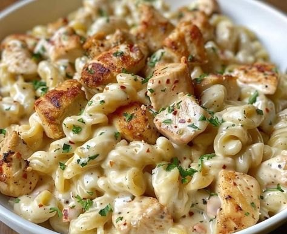

Blackened chicken, one pan of parmesan cream, and whatever pasta shape holds sauce best. The Cajun crust left in the pan becomes the sauce's flavor base — don't wash it, deglaze it.
Toss the chicken with the Cajun seasoning, salt, and pepper until every piece is coated. Sear in the olive oil over high heat, undisturbed at first — 6–7 minutes total, until crusty at the edges and just cooked through. Out of the pan.
Meanwhile, boil the pasta one minute short of the package time. Save a mug of the cooking water before you drain.
Same pan, medium heat: butter, onion, and bell pepper. Cook until soft, scraping up the blackened Cajun fond as they release their moisture. Garlic in for the last minute.
Pour in the cream and broth and simmer 3–4 minutes, until it coats a spoon. Off the heat, stir in the Parmesan a handful at a time until glossy.
Chicken and pasta back in. Toss until every piece is coated, loosening with pasta water a splash at a time. Parsley over the top, straight to the table.